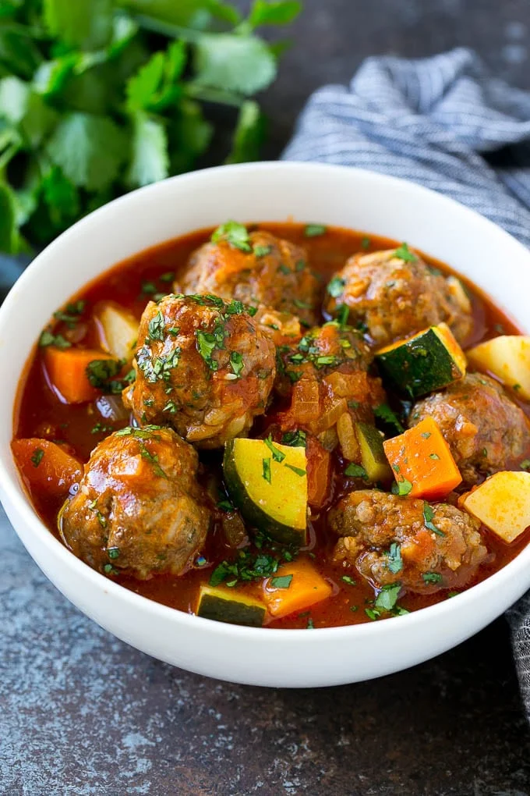

Albondigas

Description
Albondigas is the Spanish word for meatballs, often translated as “small
meatballs”. The type of meatballs traditionally found in albondigas soup
are made with ground beef and use rice as a binding agent.
Recipe
Ingredients
For the meatballs
- 500g ground beef
- 100g cooked rice
- 1tsp garlic, minced
- 50g coriander, chopped
- 10g ground Cumin Seeds
- 5g salt
- 1 egg
For the soup
- 2 tsp olive oil
- 1 litre Beef Stock, Reduced Salt
- 1 Large Onion, diced
- 1 tsp Garlic, minced
- 3 large carrots, quartered and sliced
- 3 large potatoes, diced
- 3 large zucchinis, quartered and sliced
- 1 can diced tomatoes
- 3 tbsp tomato paste
- 1 tsp ground cumin
- 1 tsp dried oregano
Steps
-
For the meatballs. Place the beef, rice, garlic, egg, cilantro, cumin,
salt and pepper in a large bowl. Mix until thoroughly combined.
-
Roll the meat mixture into 3/4 inch sized meatballs. Place the meatballs
on a tray.
-
For the soup. Heat the olive oil in a large pot over medium heat. Add
the onion and carrot and cook for 3-4 minutes.
-
Add the garlic and cook for 30 seconds. Add the potatoes, beef broth,
tomatoes, tomato sauce, cumin and oregano to the pot. Bring to a simmer.
-
Simmer for 10 minutes. Drop the meatballs into the soup and simmer for
an additional 10 minutes.
-
Add the zucchini and cook for 5 minutes more. Season the soup with salt
and pepper to taste.
- Sprinkle with chopped cilantro, then serve
Back to index